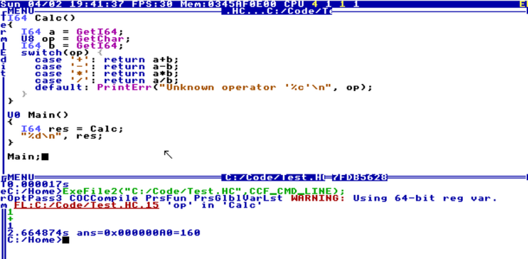
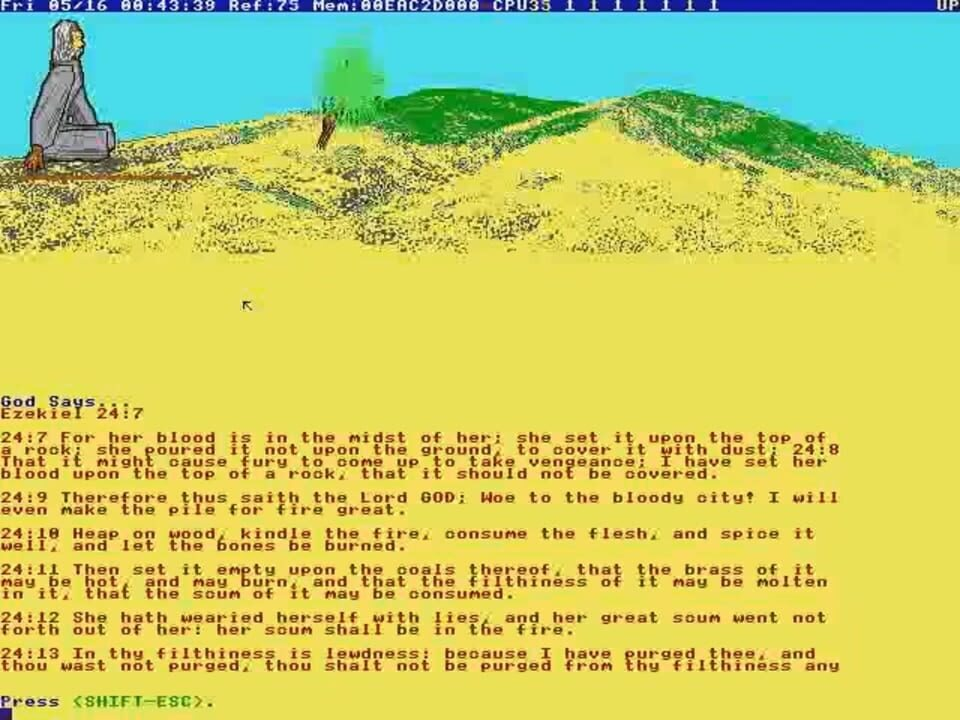

Статья третья · Техника
TempleOS и HolyC: анатомия операционной системы, написанной одним человеком
Представьте систему, в которой нет сети, нет защиты памяти, нет разграничения ядра и пользователя — зато есть собственный компилятор, редактор, файловая система, игры, 3D-графика и язык программирования. Именно такой проект десять лет писал один человек. Разбираем по частям.
Автор: редакция журнала «Код и люди» · · Время чтения: около 13 минут

Паспорт системы
Начнём с формальностей, иначе разговор уедет в мистику. TempleOS — 64-битная операционная система для архитектуры x86-64, написанная на HolyC и ассемблере. Она распространяется как публичное достояние: автор отказался от исключительных прав, поэтому исходники можно читать, менять и использовать без разрешения.
| Разработчик | Терри А. Дэвис — один человек, без соавторов и сторонних библиотек. |
|---|---|
| Первые имена | J Operating System (2005), LoseThos, SparrowOS, с 2013 — TempleOS. |
| Последний релиз | 5.03, . |
| Платформа | x86-64, запуск с CD/DVD или в виртуальной машине. |
| Видеорежим | VGA 640×480, 16 цветов, 8-битный ASCII-текст. |
| Звук | Одноголосый синтез, без звуковых карт. |
| Сеть | Отсутствует полностью — ни драйверов, ни стека TCP/IP. |
| Файловые системы | ISO 9660, FAT32 и собственная RedSea со сжатием. |
| Многозадачность | Кооперативная, без вытеснения: каждая задача сама уступает процессор. |
| Лицензия | Public domain. |
| Адрес проекта | templeos.org |
Архитектура: всё в ring 0
В обычной операционной системе есть два мира: ядро с полными правами и приложения, которые обращаются к нему через системные вызовы. Такое разделение защищает систему от ошибок в программах. В TempleOS его нет: любая задача работает в привилегированном режиме процессора, в едином адресном пространстве. Ошибка в игре может положить всю систему — и это сознательный выбор.
Зачем? Потому что TempleOS создавалась не для банков, а для того, чтобы один человек мог сесть и за вечер написать программу. Меньше абстракций — короче путь от идеи до пикселя. Компилятор, отладчик и редактор встроены в систему; можно прямо на работающей машине менять функцию ядра и пересобирать её без перезагрузки.

Ключевые решения
- Единое адресное пространство. Все задачи делят одну память: не нужно копировать данные между ядром и приложением.
- Кооперативная многозадачность. Задача обязана сама вызвать уступку процессора; вытеснения по таймеру нет.
- Собственная файловая система. RedSea поддерживает сжатие и создана именно для этой системы.
- Нет сети. Автор считал, что подключать TempleOS к интернету — «изобретать колесо» и разрушать её замкнутость.
- Встроенная графика. Двумерная и трёхмерная библиотеки находятся в самой системе, а не в отдельной подсистеме.
Отдельно стоит упомянуть отрисовку. TempleOS не полагается на ускорение видеокарты: большую часть изображения считает центральный процессор, а на экран кадр попадает через простую VGA-поверхность. Отсюда — характерная «пиксельная» эстетика и низкая частота кадров, которая в интерфейсе честно показывается в строке состояния.
Интерфейс: DOS, Turbo C и шестнадцать цветов
Рабочий стол TempleOS — это мозаика окон, наложенных друг на друга. Окно может быть текстовым или графическим, но границы у них одинаковые: синий фон, белые линии, заголовок сверху. Всё управление идёт с клавиатуры, мышь поддерживается, но не обязательна. По ощущению это одновременно DOS, среда Turbo C и игровая консоль середины восьмидесятых.
Ограничение в 16 цветов — не ностальгия, а требование, которое автор приписывал Богу. В интервью он объяснял: экран 640×480 нужен, чтобы даже ребёнок мог рисовать простые картинки, а шестнадцати цветов достаточно, чтобы не отвлекаться на «богатство палитры». В результате у TempleOS есть узнаваемый визуальный язык: ярко-синий фон, красные заголовки, зелёные и жёлтые акценты, пиксельные иконки.

Язык HolyC
HolyC — это «среднее» между C и C++, написанное Дэвисом специально для TempleOS. Он компилируется JIT-компилятором прямо во время работы системы: нажали комбинацию клавиш — функция пересобрана, ошибки подсвечены, можно сразу вызвать её из командной строки. Язык сочетает роль системного языка и роль скриптового: на нём написаны и ядро, и игры, и утилиты.
Чем HolyC отличается от C
- Нет обязательной
main() - Выражения верхнего уровня выполняются по порядку прямо при компиляции файла. Поэтому командная строка в TempleOS — это фактически интерпретатор HolyC.
- Явный амперсанд у функций
- Чтобы передать функцию как указатель, нужно писать
&MyFunction. В C имя функции само превращается в указатель — здесь это считается неявным и опасным. classвместоstruct- Составные типы объявляются ключевым словом
classи поддерживают наследование — влияние C++. - Диапазоны в
switch - Можно писать
case 0...10:и обрабатывать интервал значений одной ветвью. - 64-битные целые по умолчанию
- Все целочисленные типы ведут себя как 64-битные; для явного приведения есть функции вроде
ToI64(). - Нет макросов с параметрами
- Конструкции вида
#define MACRO(x)не поддерживаются: вместо них используются обычные функции. - Встроенный ассемблер
- Блоки ассемблера вставляются прямо в код, а доступ к регистрам и портам ввода-вывода не требует обёрток.
- Один модуль компиляции
- Нет отдельного линкера: файлы подключаются через
#include "..."и собираются в единое целое.
Простейший пример: если в командной строке TempleOS набрать арифметическое выражение, оно выполнится сразу. Это и есть язык в роли оболочки — то, чего в C приходится добиваться отдельной программой.
// Пример в духе HolyC: функция и её немедленный вызов
I64 Square(I64 x)
{
return x * x;
}
"Квадрат числа 12 равен ";
Square(12);Фрагмент иллюстративный: он показывает синтаксис и стиль, а не дословный текст из исходников TempleOS. Настоящие файлы системы лежат в репозитории на GitHub.
Почему это важно
Создать язык — полдела; куда сложнее создать среду, в которой язык полезен. HolyC работает не сама по себе, а вместе с редактором, отладчиком и графической библиотекой: написали функцию — увидели её результат на экране, не перезагружая машину. Именно эта связка давала Дэвису скорость, которой не могли похвастаться «взрослые» системы его времени.
After Egypt и «оракул»
В комплект TempleOS входит игра After Egypt. По сюжету игрок идёт по пустыне к неопалимой купине, у которой стоит «высокоскоростной секундомер». Секундомер работает как оракул: он генерирует псевдослучайный текст, который автор считал сообщениями от Бога. Сам Дэвис сравнивал это с доской Уиджи и глоссолалией — говорением на языках.
Он задавал оракулу вопросы и записывал ответы: про войну («соревнующиеся военнослужащие»), про смерть («ужасно»), про динозавров («у бронтозавров болят ноги, когда на них наступают»), про любимую игру (Donkey Kong), любимую машину (BMW), любимый гимн (латвийский) и одиннадцатую заповедь («Не мусори»). Читать это можно по-разному, но техническая суть проста: генератор случайных чисел плюс словарь — древняя идея, доведённая до ритуала.

С точки зрения программирования это учебный пример: 2D-графика, работа с текстом, простой игровой цикл — всё на HolyC, всё в нескольких сотнях строк. С точки зрения антропологии — свидетельство того, как система, задуманная как инструмент, становится способом разговаривать с миром, когда другого способа не осталось.
TempleOS и Linux: сравнение
Эти две системы выросли из противоположных установок, и сравнивать их стоит не по числу функций, а по принципам. Одна создавалась для того, чтобы выдержать нагрузку миллионов машин; другая — чтобы один человек мог понять её целиком.
| Критерий | Linux | TempleOS |
|---|---|---|
| Кто пишет | тысячи разработчиков и компании | один человек |
| Год старта | 1991 | около 1993, публичный релиз в 2005 |
| Модель памяти | ядро и пользователь разделены | единое адресное пространство, все задачи в ring 0 |
| Многозадачность | вытесняющая | кооперативная |
| Сеть | основа проекта | отсутствует |
| Графика | драйверы и ускорение | программная отрисовка, 640×480, 16 цветов |
| Язык | C и ассемблер | HolyC и ассемблер |
| Лицензия | GPL v2 | public domain |
| Задача | инфраструктура для всех | инструмент для одного автора и его разговора с Богом |
Обе системы, тем не менее, сделаны из одного материала. Там и там есть планировщик, драйверы, файловая система и компилятор. Разница в масштабе задач и в том, кому адресован результат. Именно поэтому история TempleOS так полезна для понимания Linux: она показывает, что «операционная система» — это не продукт с рынка, а решение конкретной задачи конкретным человеком.
Можно ли запустить TempleOS сегодня?
Да. Образы системы доступны на templeos.org и в архивах Internet Archive. Проще всего запускать её в виртуальной машине (QEMU, VirtualBox, VMware): современное железо плохо совместимо с драйверами VGA и PS/2, которые рассчитаны на машины эпохи автора. Загрузка с CD или Live-образа позволяет поработать в системе, ничего не устанавливая на диск.
Почему в TempleOS нет интернета?
Автор прямо писал, что система «в первую очередь для создания видеоигр» и что поддержка сети была бы «изобретением колеса». Практическое следствие: TempleOS нельзя использовать как рабочую среду для современных задач — и это ограничение осознанное, а не упущение.
Как запустить и что посмотреть
Смотреть на TempleOS лучше всего в движении: статичные скриншоты не передают, как быстро открываются окна и как выглядит пересборка кода на лету. Ниже — документальный разбор и записи самого автора.
Экскурсия по системе
Запись с экрана: как работает код
Полезные ссылки
- templeos.org — образы, документация, скриншоты.
- github.com/cia-foundation/TempleOS — исходный код, включая ядро и HolyC.
- Архив записей TempleOSVideos — в том числе прохождения After Egypt и компиляция ядра.
- Полный архив — видео, исходники, копии сайта.
- Русская Википедия: TempleOS.
- Английская Википедия: TempleOS — первоисточник большинства дат и цитат.
Источники
- Wikipedia: TempleOS — архитектура, HolyC, критика, цитаты.
- Wikipedia: Terry A. Davis — обстоятельства создания системы.
- Jesse Hicks. God's Lonely Programmer — Vice, 2014: сведения об оракуле и After Egypt.
- James Sanders. TempleOS: an educational tool for programming experiments — TechRepublic, 2014.
- holyc-lang.com — описание языка HolyC.
Технические детали приведены по открытым источникам; код в статье — иллюстративный, а не цитата из репозитория.